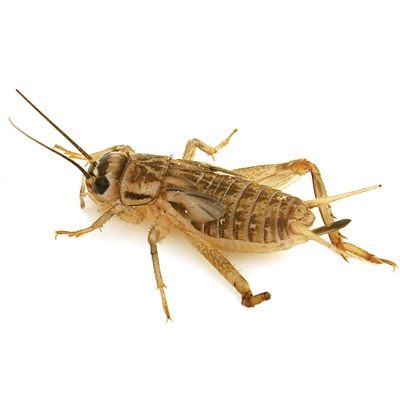

Diet
Bearded Dragon Diet, Food, & Nutrition
A bearded dragon's diet is vital to keeping him or her healthy and active. Feeding bearded dragons can seem complicated, however by following the easy guidelines below you will be able to keep your bearded dragon healthy and happy.
Introduction to Feeding Your Dragon
Bearded dragons are omnivores and can eat a variety of things. Normally your bearded dragon's diet will consist of vegetables, insects, and non-citrus fruit. When you give your beardie insects you will need to make sure that the insect isn't too big for your dragon to eat. If it is longer than the space between it's eyes, then it is too large.
Baby Bearded Dragon Diet
When a bearded dragon is young it will need to eat more insects than vegetables because it's still growing. You should always leave fresh vegetables in the cage, but three times per day you should feed your beardie insects. You should give them as many insects as they can eat within a 10-15 minute time period. After the feeding time is done, you should take the remaining insects out of their tank. A typical juvenile bearded dragon can eat anywhere from 20 to 60 crickets (or other insects) each day.
Adult Bearded Dragon Diet
Adult dragons do not need to eat as many insects as younger dragons, and overfeeding your dragon can cause him/her to become overweight. Adults only need to eat insects once per day, so when you feed them, give them as many insects as they can eat within a 10-15 minute time frame and then remove the remaining insects from their tank.
Bearded Dragon Diet and Nutrition
It may seem boring, but plants are a staple of every bearded dragon's and most other reptile's diet. Keep in mind that many vegetables are full of vitamins and if you are already giving your beardie vitamins you don't want to accidentally poison them with a vitamin overdose. Below is a list of the vegetables that you can feed your dragon:
- Vitamin-A Information
- Many vegetables contain high levels of Vitamin A and while bearded dragons can get vitamin A poisoning, it is generally not caused by overdosing on vegetables. Vegetables contain beta carotene which a bearded dragon's body converts to vitamin A when he/she needs it. If he/she does not need vitamin A then they will simply excrete the beta carotene. So the general rule of thumb is that it is unlikely for a bearded dragon to get vitamin A poisoning from vegetables, simply because the bearded dragon's body can excrete unneeded vitamin A from vegetables. However, synthetic vitamin A (found in some reptilian multivitamins) cannot be excreted by bearded dragons. This means synthetic vitamin A will cause vitamin A poisoning if the bearded dragon has already had his/her requirements of vitamin A. Moderate to severe vitamin A poisoning occurs when 10,000 IU/kg of synthetic vitamin A is given to a bearded dragon.
Safe Vegetables for Bearded Dragons and Other Reptiles
Bearded dragons need a diet of both vegetables (greens) and insects. Adult beardies will eat more vegetables than bugs, so its important to make sure the veggies they're eating are healthy and nutritious. You can see the full list of safe vegetables for bearded dragons by clicking here (including their nutritional values), or you can view a partial list below:
- Acorn squash
- Artichoke Heart
- Bell Peppers (Raw)
- Bok choy
- Butternut squash
- Cabbage (Raw)
- Carrots
- Celery
- Cucumber (Peeled)
- Endive
- Mustard greens
- Yellow squash